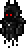

Wraith
| Drops | |
|---|---|
| Coins: | 5 |
| Wraith | |
|---|---|
|  | |
| Statistics | |
| Type | Undead Enemy |
| Environment | Surface |
| AI Type | Hovering |
| Damage | 75 |
| Max Life | 200 |
| Defense | 18 |
Wraiths are dark ghost-like enemies with glowing red eyes which only spawn in Hardmode. They have 200 health and can travel through blocks and walls. Wraiths are a severe hazard to the liveliness of your NPCs due to their ability to pass through blocks and walls. When not inside any blocks, Wraiths hover over the surface and can not gain any height.
When a Wraith attacks, it occasionally gives the Slow debuff.
One or two Wraiths will appear after destroying a Demon Altar.
History
- 1.1: Introduced.